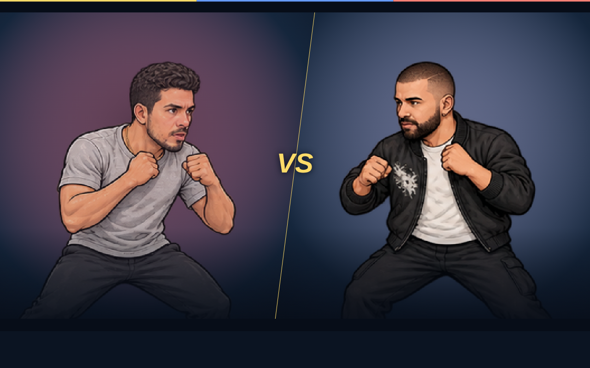

La primera columna muestra una guía generada, no una fotografía. Las fotos de investigación no se incluyen en esta galería pública. Esta comparación conserva la iteración v42; Javier fue sustituido por la versión v43 elegida después. Nacho mantiene los assets v42.
